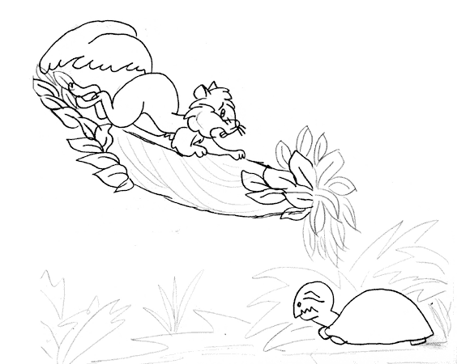

La tortuga no comprendía lo que sucedía, pues su gripe se lo impedía. Y continuó – Achís, Achís, Achuusss!!!
La ardilla de donde estaba la observaba y pensando –
¡Pobre tortuga no puedo dejarla en ese estado, no se ve nada bien! ¿Qué podré hacer por la pobre?
¡¡Ah, ya se, un rico té de nuez y seguro que se repondrá antes de contar tres!! Y corrió feliz la ardilla a preparar el té para la pobre tortuguita que no podía caminar ni hacia delante,
ni hacia atrás.